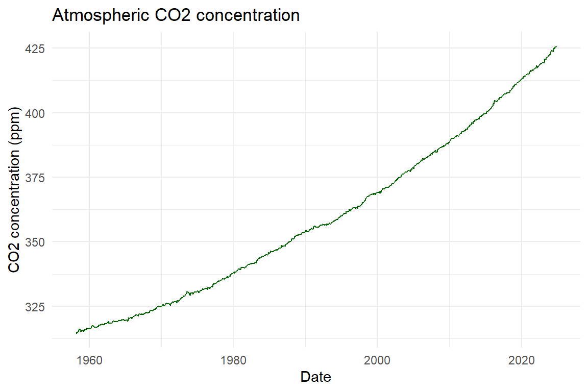

data_path <- "https://websites.umich.edu/~zhukai/env-data-sci/data"
mauna_loa_co2 <- read.table(file.path(data_path, "climate", "mauna_loa_co2.txt"), skip = 42, header = FALSE, na.strings = c("-1", "-9.99", "-0.99"))
colnames(mauna_loa_co2) <- c("year", "month", "decimal_date", "average", "interpolated", "n_day", "stdv_day", "uncertainty_month")module_two_communication_ahaworth
Abstract
This resport examines changes in gloabl warming
Keywords
climate change, carbon dixide
Start to write text.
- Global temperature anomaly (NASA GISTEMP)
- Atmospheric CO2 concentration (Mauna Loa Observatory)
- Data source
CO2 concentration has risen every year on record since systematic measurement began.
Data
Here are my data files
Results
Code chunks and inline code
Add the parameter R code
report_station <- params$station
report_start <- params$start_year
subset(mauna_loa_co2, year >= report_start) year month decimal_date average interpolated n_day stdv_day
383 1990 1 1990.042 353.86 353.78 25 0.34
384 1990 2 1990.125 355.10 354.37 28 0.66
385 1990 3 1990.208 355.75 354.27 27 0.57
386 1990 4 1990.292 356.38 353.76 28 0.55
387 1990 5 1990.375 357.38 354.23 28 0.30
388 1990 6 1990.458 356.39 354.02 29 0.40
389 1990 7 1990.542 354.89 354.24 30 0.89
390 1990 8 1990.625 353.06 354.68 22 0.62
391 1990 9 1990.708 351.38 354.69 27 0.72
392 1990 10 1990.792 351.69 354.94 28 0.30
393 1990 11 1990.875 353.14 355.18 24 0.20
394 1990 12 1990.958 354.41 355.26 28 0.51
395 1991 1 1991.042 354.93 354.90 28 0.51
396 1991 2 1991.125 355.82 355.11 26 0.54
397 1991 3 1991.208 357.33 355.79 30 0.73
398 1991 4 1991.292 358.77 356.13 30 0.66
399 1991 5 1991.375 359.23 356.10 29 0.52
400 1991 6 1991.458 358.23 355.88 29 0.30
401 1991 7 1991.542 356.30 355.69 24 0.46
402 1991 8 1991.625 353.97 355.59 23 0.39
403 1991 9 1991.708 352.34 355.66 27 0.37
404 1991 10 1991.792 352.43 355.69 27 0.25
405 1991 11 1991.875 353.89 355.87 28 0.25
406 1991 12 1991.958 355.21 356.02 30 0.34
407 1992 1 1992.042 356.34 356.29 31 0.60
408 1992 2 1992.125 357.21 356.47 27 0.56
409 1992 3 1992.208 357.97 356.38 24 0.72
410 1992 4 1992.292 359.22 356.51 27 0.53
411 1992 5 1992.375 359.71 356.52 26 0.74
412 1992 6 1992.458 359.44 357.07 30 0.49
413 1992 7 1992.542 357.15 356.58 25 0.63
414 1992 8 1992.625 354.99 356.67 24 0.62
415 1992 9 1992.708 353.01 356.36 25 0.98
416 1992 10 1992.792 353.40 356.72 29 0.56
417 1992 11 1992.875 354.42 356.48 29 0.34
418 1992 12 1992.958 355.68 356.50 31 0.32
419 1993 1 1993.042 357.10 357.06 28 0.58
420 1993 2 1993.125 357.42 356.54 28 0.49
421 1993 3 1993.208 358.59 356.88 30 0.72
422 1993 4 1993.292 359.39 356.71 25 0.53
423 1993 5 1993.375 360.30 357.14 30 0.45
424 1993 6 1993.458 359.64 357.24 28 0.35
425 1993 7 1993.542 357.45 356.87 25 0.78
426 1993 8 1993.625 355.76 357.44 27 0.62
427 1993 9 1993.708 354.14 357.51 23 0.73
428 1993 10 1993.792 354.23 357.61 28 0.29
429 1993 11 1993.875 355.53 357.65 29 0.26
430 1993 12 1993.958 357.03 357.92 29 0.28
431 1994 1 1994.042 358.36 358.25 27 0.33
432 1994 2 1994.125 359.04 358.21 25 0.50
433 1994 3 1994.208 360.11 358.41 29 0.82
434 1994 4 1994.292 361.36 358.59 28 0.50
435 1994 5 1994.375 361.78 358.59 30 0.45
436 1994 6 1994.458 360.94 358.57 27 0.30
437 1994 7 1994.542 359.51 358.91 31 0.41
438 1994 8 1994.625 357.59 359.29 24 0.43
439 1994 9 1994.708 355.86 359.31 24 0.58
440 1994 10 1994.792 356.21 359.63 28 0.28
441 1994 11 1994.875 357.65 359.80 28 0.51
442 1994 12 1994.958 359.10 359.96 28 0.46
443 1995 1 1995.042 360.04 359.91 30 0.47
444 1995 2 1995.125 361.00 360.18 28 0.52
445 1995 3 1995.208 361.98 360.37 29 0.78
446 1995 4 1995.292 363.44 360.76 29 0.65
447 1995 5 1995.375 363.83 360.73 29 0.66
448 1995 6 1995.458 363.33 360.98 27 0.37
449 1995 7 1995.542 361.78 361.10 28 0.36
450 1995 8 1995.625 359.33 360.93 24 0.70
451 1995 9 1995.708 358.32 361.70 24 0.68
452 1995 10 1995.792 358.14 361.52 29 0.26
453 1995 11 1995.875 359.61 361.75 26 0.24
454 1995 12 1995.958 360.82 361.67 30 0.36
455 1996 1 1996.042 362.20 361.98 29 0.38
456 1996 2 1996.125 363.36 362.47 28 0.55
457 1996 3 1996.208 364.28 362.64 28 0.67
458 1996 4 1996.292 364.69 361.99 29 0.59
459 1996 5 1996.375 365.25 362.23 30 0.57
460 1996 6 1996.458 365.06 362.82 30 0.38
461 1996 7 1996.542 363.69 362.98 31 0.32
462 1996 8 1996.625 361.55 363.13 27 0.49
463 1996 9 1996.708 359.69 363.14 25 0.75
464 1996 10 1996.792 359.72 363.12 29 0.32
465 1996 11 1996.875 361.04 363.18 29 0.29
466 1996 12 1996.958 362.39 363.23 29 0.36
467 1997 1 1997.042 363.24 363.03 31 0.40
468 1997 2 1997.125 364.21 363.40 28 0.62
469 1997 3 1997.208 364.65 363.02 31 0.40
470 1997 4 1997.292 366.49 363.82 21 0.46
471 1997 5 1997.375 366.77 363.87 29 0.53
472 1997 6 1997.458 365.73 363.56 27 0.23
473 1997 7 1997.542 364.46 363.74 24 0.47
474 1997 8 1997.625 362.40 363.98 25 0.57
475 1997 9 1997.708 360.44 363.83 26 0.63
476 1997 10 1997.792 360.97 364.28 27 0.32
477 1997 11 1997.875 362.65 364.71 30 0.31
478 1997 12 1997.958 364.51 365.28 30 0.41
479 1998 1 1998.042 365.39 365.19 30 0.43
480 1998 2 1998.125 366.10 365.29 28 0.62
481 1998 3 1998.208 367.36 365.73 31 0.82
482 1998 4 1998.292 368.79 366.17 29 0.63
483 1998 5 1998.375 369.56 366.68 30 0.77
484 1998 6 1998.458 369.13 366.95 28 0.24
485 1998 7 1998.542 367.98 367.29 23 0.65
486 1998 8 1998.625 366.10 367.69 30 0.30
487 1998 9 1998.708 364.16 367.51 28 0.40
488 1998 10 1998.792 364.54 367.82 30 0.26
489 1998 11 1998.875 365.67 367.70 23 0.25
490 1998 12 1998.958 367.30 368.05 26 0.36
491 1999 1 1999.042 368.35 368.13 27 0.47
492 1999 2 1999.125 369.28 368.46 21 0.47
493 1999 3 1999.208 369.84 368.24 25 0.81
494 1999 4 1999.292 371.15 368.62 29 0.67
495 1999 5 1999.375 371.12 368.31 26 0.59
496 1999 6 1999.458 370.46 368.29 26 0.44
497 1999 7 1999.542 369.61 368.93 27 0.63
498 1999 8 1999.625 367.06 368.63 25 0.38
499 1999 9 1999.708 364.95 368.28 28 0.74
500 1999 10 1999.792 365.52 368.80 31 0.28
501 1999 11 1999.875 366.88 368.86 28 0.25
502 1999 12 1999.958 368.26 368.93 26 0.29
503 2000 1 2000.042 369.45 369.24 26 0.48
504 2000 2 2000.125 369.71 368.99 19 0.48
505 2000 3 2000.208 370.75 369.24 30 0.47
506 2000 4 2000.292 371.98 369.44 27 0.58
507 2000 5 2000.375 371.75 368.87 28 0.53
508 2000 6 2000.458 371.87 369.66 28 0.24
509 2000 7 2000.542 370.02 369.36 25 0.31
510 2000 8 2000.625 368.27 369.87 27 0.42
511 2000 9 2000.708 367.15 370.46 25 0.36
512 2000 10 2000.792 367.18 370.42 30 0.27
513 2000 11 2000.875 368.53 370.48 25 0.30
514 2000 12 2000.958 369.83 370.46 30 0.38
515 2001 1 2001.042 370.76 370.60 30 0.56
516 2001 2 2001.125 371.69 370.95 26 0.61
517 2001 3 2001.208 372.63 371.06 26 0.46
518 2001 4 2001.292 373.55 370.99 29 0.56
519 2001 5 2001.375 374.03 371.11 24 0.41
520 2001 6 2001.458 373.40 371.17 26 0.37
521 2001 7 2001.542 371.68 371.08 25 0.62
522 2001 8 2001.625 369.78 371.39 27 0.60
523 2001 9 2001.708 368.34 371.61 28 0.49
524 2001 10 2001.792 368.61 371.85 31 0.33
525 2001 11 2001.875 369.94 371.92 24 0.24
526 2001 12 2001.958 371.42 372.09 29 0.40
527 2002 1 2002.042 372.70 372.48 28 0.52
528 2002 2 2002.125 373.37 372.49 28 0.66
529 2002 3 2002.208 374.30 372.61 24 0.62
530 2002 4 2002.292 375.19 372.54 29 0.55
531 2002 5 2002.375 375.93 372.98 29 0.57
532 2002 6 2002.458 375.69 373.46 28 0.46
533 2002 7 2002.542 374.16 373.58 25 0.47
534 2002 8 2002.625 372.03 373.70 28 0.65
535 2002 9 2002.708 370.92 374.29 23 0.74
536 2002 10 2002.792 370.73 374.06 31 0.62
537 2002 11 2002.875 372.43 374.52 29 0.43
538 2002 12 2002.958 373.98 374.72 31 0.46
539 2003 1 2003.042 375.07 374.82 30 0.51
540 2003 2 2003.125 375.82 374.95 27 0.58
541 2003 3 2003.208 376.64 374.99 28 0.63
542 2003 4 2003.292 377.92 375.24 27 0.37
543 2003 5 2003.375 378.78 375.73 30 0.78
544 2003 6 2003.458 378.46 376.21 25 0.39
545 2003 7 2003.542 376.88 376.37 29 0.70
546 2003 8 2003.625 374.57 376.27 23 0.57
547 2003 9 2003.708 373.34 376.65 25 0.37
548 2003 10 2003.792 373.31 376.65 30 0.33
549 2003 11 2003.875 374.84 376.99 26 0.45
550 2003 12 2003.958 376.17 376.93 27 0.40
551 2004 1 2004.042 377.17 376.96 30 0.45
552 2004 2 2004.125 378.05 377.19 29 0.74
553 2004 3 2004.208 379.06 377.40 27 0.84
554 2004 4 2004.292 380.54 377.80 26 0.52
555 2004 5 2004.375 380.80 377.66 28 0.61
556 2004 6 2004.458 379.87 377.57 21 0.47
557 2004 7 2004.542 377.65 377.12 25 0.50
558 2004 8 2004.625 376.17 377.90 16 0.45
559 2004 9 2004.708 374.43 377.80 15 0.56
560 2004 10 2004.792 374.63 377.99 29 0.19
561 2004 11 2004.875 376.33 378.49 29 0.62
562 2004 12 2004.958 377.68 378.48 30 0.29
563 2005 1 2005.042 378.63 378.37 31 0.32
564 2005 2 2005.125 379.91 379.10 24 0.60
565 2005 3 2005.208 380.95 379.45 26 1.16
566 2005 4 2005.292 382.48 379.84 26 0.53
567 2005 5 2005.375 382.64 379.49 31 0.61
568 2005 6 2005.458 382.40 380.07 28 0.21
569 2005 7 2005.542 380.93 380.38 29 0.38
570 2005 8 2005.625 378.93 380.61 26 0.53
571 2005 9 2005.708 376.89 380.20 27 0.51
572 2005 10 2005.792 377.19 380.50 14 0.15
573 2005 11 2005.875 378.54 380.69 23 0.45
574 2005 12 2005.958 380.30 381.09 26 0.39
575 2006 1 2006.042 381.58 381.33 24 0.31
576 2006 2 2006.125 382.40 381.58 25 0.51
577 2006 3 2006.208 382.86 381.32 29 0.55
578 2006 4 2006.292 384.80 382.11 25 0.49
579 2006 5 2006.375 385.22 382.06 24 0.45
580 2006 6 2006.458 384.24 381.93 28 0.43
581 2006 7 2006.542 382.65 382.10 24 0.32
582 2006 8 2006.625 380.60 382.27 27 0.47
583 2006 9 2006.708 379.04 382.35 25 0.42
584 2006 10 2006.792 379.33 382.66 23 0.40
585 2006 11 2006.875 380.35 382.52 29 0.39
586 2006 12 2006.958 382.02 382.84 27 0.38
587 2007 1 2007.042 383.10 382.88 24 0.76
588 2007 2 2007.125 384.12 383.22 21 0.81
589 2007 3 2007.208 384.81 383.17 27 0.63
590 2007 4 2007.292 386.73 383.95 25 0.76
591 2007 5 2007.375 386.78 383.56 29 0.64
592 2007 6 2007.458 386.33 384.06 26 0.42
593 2007 7 2007.542 384.73 384.25 27 0.44
594 2007 8 2007.625 382.24 383.95 22 0.64
595 2007 9 2007.708 381.20 384.56 21 0.45
596 2007 10 2007.792 381.37 384.72 29 0.19
597 2007 11 2007.875 382.70 384.90 30 0.31
598 2007 12 2007.958 384.19 385.07 22 0.34
599 2008 1 2008.042 385.78 385.54 31 0.56
600 2008 2 2008.125 386.06 385.20 26 0.58
601 2008 3 2008.208 386.28 384.72 30 0.60
602 2008 4 2008.292 387.33 384.71 22 1.19
603 2008 5 2008.375 388.78 385.69 25 0.57
604 2008 6 2008.458 387.99 385.68 23 0.49
605 2008 7 2008.542 386.61 386.05 10 0.96
606 2008 8 2008.625 384.32 385.98 25 0.66
607 2008 9 2008.708 383.41 386.69 27 0.34
608 2008 10 2008.792 383.22 386.50 23 0.27
609 2008 11 2008.875 384.41 386.59 28 0.29
610 2008 12 2008.958 385.79 386.64 29 0.27
611 2009 1 2009.042 387.17 386.86 30 0.38
612 2009 2 2009.125 387.70 386.81 26 0.49
613 2009 3 2009.208 389.04 387.54 28 0.68
614 2009 4 2009.292 389.76 387.15 29 0.85
615 2009 5 2009.375 390.36 387.24 30 0.51
616 2009 6 2009.458 389.70 387.46 29 0.60
617 2009 7 2009.542 388.24 387.77 22 0.31
618 2009 8 2009.625 386.29 387.99 28 0.62
619 2009 9 2009.708 384.95 388.22 28 0.56
620 2009 10 2009.792 384.64 387.88 30 0.31
621 2009 11 2009.875 386.23 388.36 30 0.29
622 2009 12 2009.958 387.63 388.43 20 0.47
623 2010 1 2010.042 388.91 388.62 30 0.92
624 2010 2 2010.125 390.41 389.47 20 1.31
625 2010 3 2010.208 391.37 389.85 25 1.05
626 2010 4 2010.292 392.67 390.12 26 0.65
627 2010 5 2010.375 393.21 390.09 29 0.65
628 2010 6 2010.458 392.38 390.10 28 0.42
629 2010 7 2010.542 390.41 389.93 29 0.47
630 2010 8 2010.625 388.54 390.21 26 0.41
631 2010 9 2010.708 387.03 390.32 29 0.55
632 2010 10 2010.792 387.43 390.72 31 0.27
633 2010 11 2010.875 388.87 390.98 29 0.42
634 2010 12 2010.958 389.99 390.80 29 0.47
635 2011 1 2011.042 391.50 391.19 29 0.88
636 2011 2 2011.125 392.05 391.12 28 0.47
637 2011 3 2011.208 392.80 391.27 29 0.97
638 2011 4 2011.292 393.44 390.83 28 0.73
639 2011 5 2011.375 394.41 391.24 29 0.93
640 2011 6 2011.458 393.95 391.64 28 0.45
641 2011 7 2011.542 392.72 392.24 26 0.71
642 2011 8 2011.625 390.33 392.04 27 0.42
643 2011 9 2011.708 389.28 392.60 26 0.31
644 2011 10 2011.792 389.19 392.53 30 0.17
645 2011 11 2011.875 390.48 392.64 28 0.26
646 2011 12 2011.958 392.06 392.86 26 0.37
647 2012 1 2012.042 393.31 393.07 30 0.77
648 2012 2 2012.125 394.04 393.20 26 1.19
649 2012 3 2012.208 394.59 392.99 30 0.63
650 2012 4 2012.292 396.38 393.65 29 0.59
651 2012 5 2012.375 396.93 393.73 30 0.50
652 2012 6 2012.458 395.91 393.63 28 0.59
653 2012 7 2012.542 394.56 394.12 26 0.30
654 2012 8 2012.625 392.59 394.37 30 0.52
655 2012 9 2012.708 391.32 394.75 26 0.42
656 2012 10 2012.792 391.27 394.64 28 0.23
657 2012 11 2012.875 393.20 395.25 29 0.53
658 2012 12 2012.958 394.57 395.27 29 0.44
659 2013 1 2013.042 395.78 395.62 28 0.60
660 2013 2 2013.125 397.03 396.23 25 0.57
661 2013 3 2013.208 397.66 396.07 30 0.71
662 2013 4 2013.292 398.64 395.79 22 0.59
663 2013 5 2013.375 400.02 396.64 28 0.37
664 2013 6 2013.458 398.81 396.48 26 0.43
665 2013 7 2013.542 397.51 397.12 21 0.52
666 2013 8 2013.625 395.39 397.27 27 0.45
667 2013 9 2013.708 393.72 397.24 26 0.35
668 2013 10 2013.792 393.90 397.25 28 0.16
669 2013 11 2013.875 395.36 397.35 30 0.60
670 2013 12 2013.958 397.03 397.78 30 0.48
671 2014 1 2014.042 398.04 397.74 31 0.49
672 2014 2 2014.125 398.27 397.45 27 0.51
673 2014 3 2014.208 399.91 398.37 22 0.84
674 2014 4 2014.292 401.51 398.63 26 0.50
675 2014 5 2014.375 401.96 398.56 22 0.51
676 2014 6 2014.458 401.43 399.10 28 0.36
677 2014 7 2014.542 399.27 398.85 25 0.55
678 2014 8 2014.625 397.18 399.07 22 0.28
679 2014 9 2014.708 395.54 399.11 21 0.54
680 2014 10 2014.792 396.16 399.58 24 0.73
681 2014 11 2014.875 397.40 399.49 27 0.37
682 2014 12 2014.958 399.08 399.81 29 0.60
683 2015 1 2015.042 400.18 399.92 30 0.55
684 2015 2 2015.125 400.55 399.77 28 0.63
685 2015 3 2015.208 401.74 400.22 24 1.02
686 2015 4 2015.292 403.35 400.46 26 0.86
687 2015 5 2015.375 404.15 400.70 30 0.32
688 2015 6 2015.458 402.97 400.65 29 0.47
689 2015 7 2015.542 401.46 401.11 24 0.57
690 2015 8 2015.625 399.11 401.04 28 0.74
691 2015 9 2015.708 397.82 401.43 25 0.32
692 2015 10 2015.792 398.49 401.89 28 0.56
693 2015 11 2015.875 400.27 402.24 25 0.58
694 2015 12 2015.958 402.06 402.72 30 0.67
695 2016 1 2016.042 402.73 402.45 27 0.56
696 2016 2 2016.125 404.25 403.40 25 1.11
697 2016 3 2016.208 405.06 403.54 28 0.81
698 2016 4 2016.292 407.60 404.77 23 1.04
699 2016 5 2016.375 407.90 404.41 29 0.50
700 2016 6 2016.458 406.99 404.59 26 0.60
701 2016 7 2016.542 404.59 404.24 28 0.88
702 2016 8 2016.625 402.45 404.41 24 0.60
703 2016 9 2016.708 401.23 404.85 25 0.44
704 2016 10 2016.792 401.79 405.23 29 0.30
705 2016 11 2016.875 403.72 405.74 27 0.72
706 2016 12 2016.958 404.64 405.33 29 0.44
707 2017 1 2017.042 406.36 406.04 27 0.68
708 2017 2 2017.125 406.66 405.80 26 0.71
709 2017 3 2017.208 407.54 406.05 24 1.03
710 2017 4 2017.292 409.22 406.37 26 0.86
711 2017 5 2017.375 409.89 406.37 27 0.57
712 2017 6 2017.458 409.08 406.68 26 0.54
713 2017 7 2017.542 407.33 407.01 28 0.61
714 2017 8 2017.625 405.32 407.31 29 0.32
715 2017 9 2017.708 403.57 407.17 26 0.37
716 2017 10 2017.792 403.82 407.23 27 0.30
717 2017 11 2017.875 405.31 407.36 26 0.41
718 2017 12 2017.958 407.00 407.71 31 0.57
719 2018 1 2018.042 408.15 407.83 29 0.55
720 2018 2 2018.125 408.52 407.61 28 0.52
721 2018 3 2018.208 409.59 408.06 29 0.65
722 2018 4 2018.292 410.45 407.65 21 0.90
723 2018 5 2018.375 411.44 407.98 24 0.86
724 2018 6 2018.458 410.99 408.60 29 0.61
725 2018 7 2018.542 408.90 408.60 27 0.46
726 2018 8 2018.625 407.16 409.17 31 0.28
727 2018 9 2018.708 405.71 409.30 29 0.45
728 2018 10 2018.792 406.19 409.56 30 0.32
729 2018 11 2018.875 408.21 410.24 24 0.56
730 2018 12 2018.958 409.27 409.99 30 0.50
731 2019 1 2019.042 411.03 410.69 26 1.26
732 2019 2 2019.125 411.96 410.97 27 1.14
733 2019 3 2019.208 412.18 410.71 28 1.12
734 2019 4 2019.292 413.54 410.92 27 0.60
735 2019 5 2019.375 414.86 411.47 28 0.50
736 2019 6 2019.458 414.15 411.74 27 0.36
737 2019 7 2019.542 411.96 411.64 25 0.81
738 2019 8 2019.625 410.17 412.10 29 0.32
739 2019 9 2019.708 408.76 412.26 29 0.35
740 2019 10 2019.792 408.74 412.09 29 0.31
741 2019 11 2019.875 410.47 412.50 26 0.40
742 2019 12 2019.958 411.97 412.71 31 0.40
743 2020 1 2020.042 413.59 413.22 29 0.73
744 2020 2 2020.125 414.32 413.40 28 0.69
745 2020 3 2020.208 414.72 413.35 26 0.32
746 2020 4 2020.292 416.42 413.92 28 0.65
747 2020 5 2020.375 417.28 413.98 27 0.61
748 2020 6 2020.458 416.58 414.15 27 0.44
749 2020 7 2020.542 414.58 414.19 30 0.57
750 2020 8 2020.625 412.75 414.60 25 0.25
751 2020 9 2020.708 411.50 414.90 29 0.31
752 2020 10 2020.792 411.49 414.79 30 0.22
753 2020 11 2020.875 413.10 415.11 27 0.81
754 2020 12 2020.958 414.23 414.91 30 0.48
755 2021 1 2021.042 415.49 415.22 29 0.44
756 2021 2 2021.125 416.72 415.79 28 1.02
757 2021 3 2021.208 417.61 416.18 28 0.86
758 2021 4 2021.292 419.01 416.52 24 1.12
759 2021 5 2021.375 419.09 415.84 28 0.90
760 2021 6 2021.458 418.93 416.50 29 0.65
761 2021 7 2021.542 416.90 416.45 31 0.71
762 2021 8 2021.625 414.42 416.25 25 0.74
763 2021 9 2021.708 413.26 416.67 27 0.29
764 2021 10 2021.792 413.90 417.15 29 0.35
765 2021 11 2021.875 414.97 416.96 30 0.36
766 2021 12 2021.958 416.67 417.44 28 0.48
767 2022 1 2022.042 418.13 417.86 30 0.72
768 2022 2 2022.125 419.24 418.31 27 0.92
769 2022 3 2022.208 418.76 417.33 30 0.78
770 2022 4 2022.292 420.19 417.70 28 0.86
771 2022 5 2022.375 420.97 417.72 31 0.75
772 2022 6 2022.458 420.94 418.51 28 0.30
773 2022 7 2022.542 418.85 418.41 27 0.57
774 2022 8 2022.625 417.15 418.98 27 0.37
775 2022 9 2022.708 415.91 419.31 28 0.41
776 2022 10 2022.792 415.74 418.99 30 0.27
777 2022 11 2022.875 417.47 419.46 25 0.52
778 2022 12 2022.958 419.00 419.76 24 0.57
779 2023 1 2023.042 419.47 419.20 31 0.40
780 2023 2 2023.125 420.31 419.38 23 0.70
781 2023 3 2023.208 420.99 419.56 30 0.74
782 2023 4 2023.292 423.31 420.82 27 0.56
783 2023 5 2023.375 424.00 420.75 31 0.70
784 2023 6 2023.458 423.68 421.25 29 0.57
785 2023 7 2023.542 421.83 421.38 21 0.48
786 2023 8 2023.625 419.68 421.52 21 0.45
787 2023 9 2023.708 418.50 421.91 18 0.30
788 2023 10 2023.792 418.82 422.07 27 0.47
789 2023 11 2023.875 420.46 422.45 21 0.91
790 2023 12 2023.958 421.86 422.62 20 0.69
791 2024 1 2024.042 422.80 422.54 27 0.70
792 2024 2 2024.125 424.55 423.63 22 1.24
793 2024 3 2024.208 425.38 423.96 22 0.99
794 2024 4 2024.292 426.51 424.02 22 0.99
795 2024 5 2024.375 426.90 423.65 29 0.76
796 2024 6 2024.458 426.91 424.48 20 0.65
797 2024 7 2024.542 425.55 425.11 24 0.69
798 2024 8 2024.625 422.99 424.83 22 1.08
799 2024 9 2024.708 422.03 425.44 18 0.41
800 2024 10 2024.792 422.38 425.63 22 0.35
801 2024 11 2024.875 423.85 425.84 24 0.33
uncertainty_month
383 0.13
384 0.24
385 0.21
386 0.20
387 0.11
388 0.14
389 0.31
390 0.25
391 0.26
392 0.11
393 0.08
394 0.19
395 0.18
396 0.20
397 0.25
398 0.23
399 0.19
400 0.11
401 0.18
402 0.15
403 0.14
404 0.09
405 0.09
406 0.12
407 0.21
408 0.21
409 0.28
410 0.20
411 0.28
412 0.17
413 0.24
414 0.24
415 0.38
416 0.20
417 0.12
418 0.11
419 0.21
420 0.18
421 0.25
422 0.20
423 0.16
424 0.13
425 0.30
426 0.23
427 0.29
428 0.11
429 0.09
430 0.10
431 0.12
432 0.19
433 0.29
434 0.18
435 0.16
436 0.11
437 0.14
438 0.17
439 0.23
440 0.10
441 0.18
442 0.17
443 0.16
444 0.19
445 0.28
446 0.23
447 0.24
448 0.14
449 0.13
450 0.28
451 0.26
452 0.09
453 0.09
454 0.12
455 0.13
456 0.20
457 0.24
458 0.21
459 0.20
460 0.13
461 0.11
462 0.18
463 0.29
464 0.11
465 0.10
466 0.13
467 0.14
468 0.22
469 0.14
470 0.19
471 0.19
472 0.09
473 0.18
474 0.22
475 0.24
476 0.12
477 0.11
478 0.14
479 0.15
480 0.23
481 0.28
482 0.22
483 0.27
484 0.09
485 0.26
486 0.10
487 0.14
488 0.09
489 0.10
490 0.14
491 0.17
492 0.20
493 0.31
494 0.24
495 0.22
496 0.16
497 0.23
498 0.14
499 0.27
500 0.10
501 0.09
502 0.11
503 0.18
504 0.21
505 0.16
506 0.21
507 0.19
508 0.09
509 0.12
510 0.15
511 0.14
512 0.09
513 0.12
514 0.13
515 0.20
516 0.23
517 0.17
518 0.20
519 0.16
520 0.14
521 0.24
522 0.22
523 0.18
524 0.11
525 0.09
526 0.14
527 0.19
528 0.24
529 0.24
530 0.19
531 0.20
532 0.17
533 0.18
534 0.24
535 0.30
536 0.21
537 0.15
538 0.16
539 0.18
540 0.21
541 0.23
542 0.14
543 0.27
544 0.15
545 0.25
546 0.23
547 0.14
548 0.12
549 0.17
550 0.15
551 0.16
552 0.26
553 0.31
554 0.19
555 0.22
556 0.19
557 0.19
558 0.21
559 0.28
560 0.07
561 0.22
562 0.10
563 0.11
564 0.24
565 0.44
566 0.20
567 0.21
568 0.08
569 0.13
570 0.20
571 0.19
572 0.08
573 0.18
574 0.15
575 0.12
576 0.20
577 0.20
578 0.19
579 0.17
580 0.16
581 0.12
582 0.17
583 0.16
584 0.16
585 0.14
586 0.14
587 0.30
588 0.34
589 0.23
590 0.29
591 0.23
592 0.16
593 0.16
594 0.26
595 0.19
596 0.07
597 0.11
598 0.14
599 0.19
600 0.22
601 0.21
602 0.49
603 0.22
604 0.20
605 0.58
606 0.25
607 0.12
608 0.11
609 0.11
610 0.10
611 0.13
612 0.18
613 0.25
614 0.30
615 0.18
616 0.21
617 0.13
618 0.22
619 0.20
620 0.11
621 0.10
622 0.20
623 0.32
624 0.56
625 0.40
626 0.24
627 0.23
628 0.15
629 0.17
630 0.16
631 0.19
632 0.09
633 0.15
634 0.17
635 0.31
636 0.17
637 0.35
638 0.26
639 0.33
640 0.16
641 0.26
642 0.15
643 0.12
644 0.06
645 0.10
646 0.14
647 0.27
648 0.45
649 0.22
650 0.21
651 0.17
652 0.21
653 0.11
654 0.18
655 0.16
656 0.08
657 0.19
658 0.16
659 0.22
660 0.22
661 0.25
662 0.24
663 0.13
664 0.16
665 0.22
666 0.16
667 0.13
668 0.06
669 0.21
670 0.17
671 0.17
672 0.19
673 0.34
674 0.19
675 0.21
676 0.13
677 0.21
678 0.12
679 0.23
680 0.29
681 0.14
682 0.21
683 0.19
684 0.23
685 0.40
686 0.32
687 0.11
688 0.17
689 0.22
690 0.27
691 0.12
692 0.20
693 0.22
694 0.23
695 0.21
696 0.43
697 0.29
698 0.41
699 0.18
700 0.23
701 0.32
702 0.23
703 0.17
704 0.11
705 0.26
706 0.16
707 0.25
708 0.27
709 0.40
710 0.32
711 0.21
712 0.20
713 0.22
714 0.12
715 0.14
716 0.11
717 0.15
718 0.20
719 0.19
720 0.19
721 0.23
722 0.38
723 0.33
724 0.22
725 0.17
726 0.10
727 0.16
728 0.11
729 0.22
730 0.17
731 0.47
732 0.42
733 0.40
734 0.22
735 0.18
736 0.13
737 0.31
738 0.11
739 0.13
740 0.11
741 0.15
742 0.14
743 0.26
744 0.25
745 0.12
746 0.24
747 0.23
748 0.16
749 0.20
750 0.10
751 0.11
752 0.08
753 0.30
754 0.17
755 0.16
756 0.37
757 0.31
758 0.44
759 0.32
760 0.23
761 0.24
762 0.28
763 0.11
764 0.12
765 0.13
766 0.17
767 0.25
768 0.34
769 0.27
770 0.31
771 0.26
772 0.11
773 0.21
774 0.13
775 0.15
776 0.10
777 0.20
778 0.22
779 0.14
780 0.28
781 0.26
782 0.21
783 0.24
784 0.20
785 0.20
786 0.19
787 0.14
788 0.17
789 0.38
790 0.29
791 0.26
792 0.51
793 0.40
794 0.40
795 0.27
796 0.28
797 0.27
798 0.44
799 0.18
800 0.14
801 0.13Other options target specific kinds of output rather than the whole chunk: message: false and warning: false suppress messages and warnings, results: hide and fig-show: hide hide printed output and plots, and error: true lets rendering continue past a failing chunk instead of stopping the whole document.
# Summarize CO2 by decade for the report
mauna_loa_co2$decade <- floor(mauna_loa_co2$year / 10) * 10
aggregate(interpolated ~ decade, data = mauna_loa_co2, FUN = mean, na.rm = TRUE) decade interpolated
1 1950 315.6686
2 1960 320.2821
3 1970 330.8580
4 1980 345.6547
5 1990 360.5839
6 2000 378.7729
7 2010 400.4107
8 2020 418.8453Rather than repeating the same options on every chunk, we can set them once in the YAML header under execute to apply throughout the entire document.
n_observations <- sum(!is.na(mauna_loa_co2$average))There are 801 non-missing monthly CO2 observations.
library(tidyverse)Figures, tables and citations 9/16/2026
mauna_loa_co2$Date <- as.Date(with(mauna_loa_co2, ISOdate(year, month, 1)))ggplot(mauna_loa_co2, aes(x = Date, y = interpolated)) +
geom_line(color = "darkgreen") +
labs(x = "Date", y = "CO2 concentration (ppm)", title = "Atmospheric CO2 concentration") +
theme_minimal()
As shown in Figure 1, atmospheric CO2 has risen steadily since 1958.
The complete source for the labeled table is:
mauna_loa_co2$decade <- floor(mauna_loa_co2$year / 10) * 10
co2_by_decade <- aggregate(interpolated ~ decade, data = mauna_loa_co2, FUN = mean, na.rm = TRUE)
co2_by_decade$interpolated <- round(co2_by_decade$interpolated, 1)
names(co2_by_decade) <- c("Decade", "Mean CO2 (ppm)")
knitr::kable(co2_by_decade)| Decade | Mean CO2 (ppm) |
|---|---|
| 1950 | 315.7 |
| 1960 | 320.3 |
| 1970 | 330.9 |
| 1980 | 345.7 |
| 1990 | 360.6 |
| 2000 | 378.8 |
| 2010 | 400.4 |
| 2020 | 418.8 |
Quarto also supports citations to external sources.
Atmospheric CO2 has been measured continuously at Mauna Loa since 1958, extending an ice-core record that reaches back hundreds of thousands of years (Barnola et al. 2003).
References
Barnola, J.-M., D. Raynaud, C. Lorius, and N. I. Barkov. 2003. Historical CO2 Record from the Vostok Ice Core.